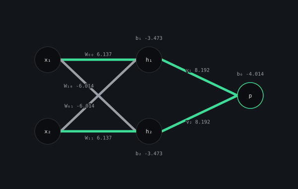
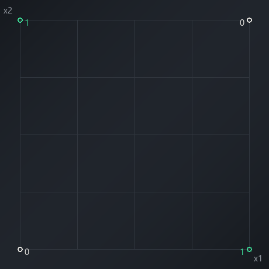

两条对角线各是一类。任何一条直线最多分对三个点——这是单层网络学不会 XOR 的原因，不是训练不够久。
一条直线分不开，两条就够了
四个点放在正方形的四角，两类各占一条对角线。单层感知机的边界是一条直线，无论怎么摆都会分错一个点。想让错误降到 0，必须先把输入映射到另一个空间，再在那个空间里画线。
这里用最小的方案：两个隐藏神经元。每个隐藏单元各自画一条线，输入落到线的哪一侧，就决定它在这一维的坐标；两个坐标拼起来，原来分不开的对角线变成了可以一刀切开的形状。
参数量：输入到隐藏 2×2 的权重加 2 个偏置，隐藏到输出 2 个权重加 1 个偏置，合计 {{K:params}} 个数。整页所有读数都是这 9 个数算出来的。

| 参数 | 含义 | 初值 | 末值 | 变化 |
|---|
初值是手工写的常数（W=[[2,-2],[-2,2]]、b=(-1,-1)、v=(3,3)、b_out=-2.5），不是随机数——随机初值会不稳定，这件事单独在第 06 段量过。
左边是网络本身，右边是同一时刻的决策边界。点播放，看它怎么从一片灰变成清楚的两块；拖动时间轴可以停在任意一轮。
网络与权重
线宽 = |w| · 亮色为正、灰为负决策边界
p ≥ 0.5 判 1- 损失（交叉熵）
- —
- 判对数
- —
- 最小判对边界
- —
- 隐藏层最大激活
- —



同一张画布上的判 1 区域：第 0 轮只有左边缘一条窄带（几乎整片判 0），末轮变成上下两块，四个样本 {{K:acc}} 判对。
每一帧都记录了优化器更新前的 9 个梯度。它们不是用前后两帧参数差反推的，是训练脚本当场写下来的——所以「箭头指向损失下降方向」这句话在这一页是可验证的，不是修辞。
亮色表示梯度为正（参数该变小），灰色表示梯度为负（参数该变大）。Adam 用的不只是这一步的方向，还有它的一阶矩和二阶矩，所以实际的步长和这里的条长不成正比。
| 参数 | 梯度 | 方向 |
|---|
| 指标 | 初值 | 末值 | 说明 |
|---|
这四行是这一页的全部结论性数字，每一个都能用仓库里的 code/run_and_log.py 复算出来。
把初值换成随机数（W、v ~ N(0,2)，b、b₀ ~ N(0,1)），其余设置不变，跑 20 个种子：{{K:rand_ok}} 次学会、{{K:rand_fail}} 次没学会。没学会的那几次，损失停在 0.69 附近——正好是「四个样本全判 0.5」时的交叉熵。
这不是代码 bug，是 2 个隐藏单元的自由度太小：初值把两个隐藏单元放在同一条线上，它们就永远分不出两条线来。固定初值就是为了让这件作业每次讲同一件事。
失败的种子：{{K:rand_bad}}。脚本在 code/random_init.py。
复现：一条命令
第二条命令把 data/metrics.json 里的数字写进这一页，第三条把能查的都查一遍：帧数、每帧 32 个数、参数重算、连续两次构建是否逐字节一致、页面里有没有外部请求。
关掉 JavaScript 之后
回放台、隐藏层散点、梯度条会消失，其余部分照常可读：结论带、9 个参数的初末值表、末轮决策边界图、损失曲线、四个样本的激活与判定、关键数字表。
降级不是「留一块空白」，而是提前把终态画成静态图放进页面——脚本关掉时看到的是同一组数字，只是不能拖着看中间过程。
数据指纹：{{K:build}} · 帧数 {{K:frames}} · 每帧 32 个数 · {{K:dtype}} · 生成脚本 code/run_and_log.py